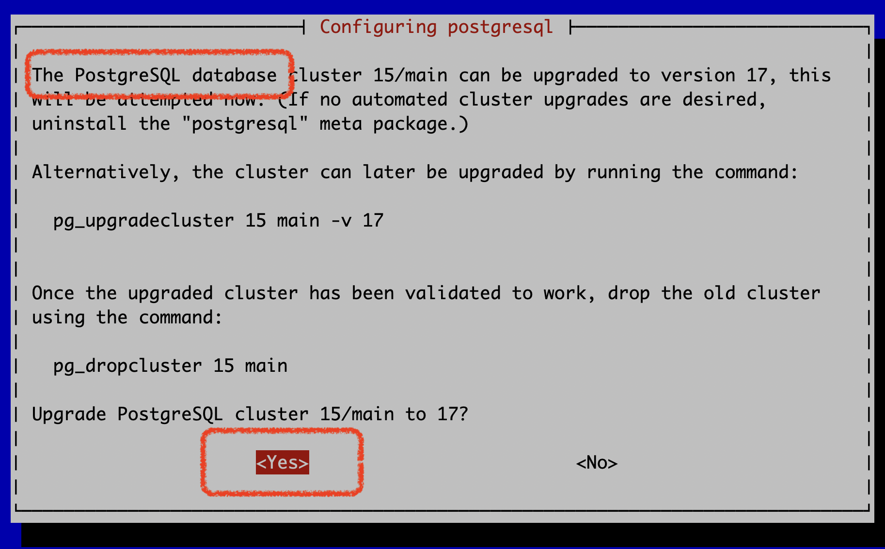
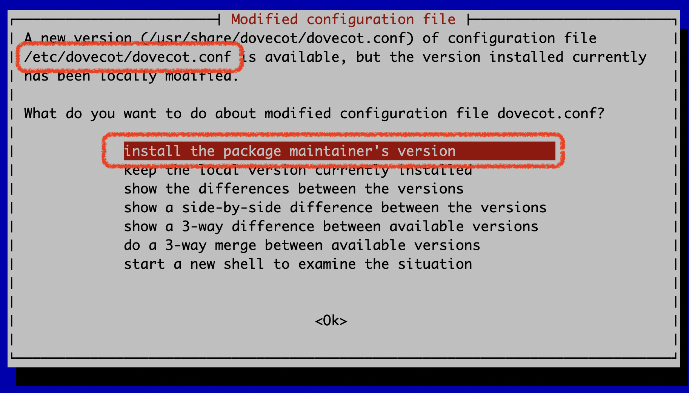

Warning
This is still a DRAFT document, do NOT apply it now.
SOGo Groupware
SOGo team doesn't offer binary packages for Debian 13 (and CentOS Stream 10 too) yet, so if you're running SOGo on Debian 12, please wait for some more time and leave a reply in SOGo bug tracker to let them know you need it.
log_timezone and
timezone parameters, they are not used by PostgreSQL version 17, and causes
PostgreSQL fail to start.perl -pi -e 's/^(log_timezone.*)/#${1}/g' /etc/postgresql/15/main/postgresql.conf
perl -pi -e 's/^(timezone.*)/#${1}/g' /etc/postgresql/15/main/postgresql.conf
export LANG=C
export LC_ALL=C
export LC_CTYPE=C
Follow the Debian official upgrade tutorial to upgrade Debian from version 12 to 13.
During OS upgrade, please pay close attention to few steps:
yes to migrate PostgreSQL databases (15 -> 17).
Choose install the package maintainer's version while upgrading Dovecot package.
With current /etc/dovecot/dovecot.conf, Dovecot (version 2.4) fails to
start and aborts the whole OS upgrade procedure. So you must choose
install the package maintainer's version to prevent the abort.
We will generate a working config file later with EE.

Here's a third-party tutorial, short, simple, and it works. Below are the commands you need to run:
apt update
apt full-upgrade -y
perl -pi -e 's#bookworm#trixie#g' /etc/apt/sources.list
perl -pi -e 's#bookworm#trixie#g' /etc/apt/sources.list.d/sogo.list
apt update
apt upgrade --without-new-pkgs -y
apt full-upgrade --autoremove -y
apt --purge autoremove -y
apt autoclean
systemctl disable apache2
systemctl enable nginx
apt remove --purge -y 'php8.2*'
reboot
PostgreSQL backend: If it failed to migrate to PostgreSQL version 17 automatically during OS upgrade, please run command as root user manually to finish the migration:
pg_upgradecluster 15 main -v 17
Upgrade EE to latest version if you're running an old version (at least EE v1.5.0 is required): https://docs.iredmail.org/upgrade.ee.html
Login to EE admin panel as global admin, click Deployments ->
Re-perform full deployment to generate config files for new software
offered by Debian 13.
Note: After logged in to EE admin panel, it may display error messages like
Internal server error, it's safe to ignore them since we didn't
re-perform full deployment yet, the error messages will be gone after the deployment.
That's all.